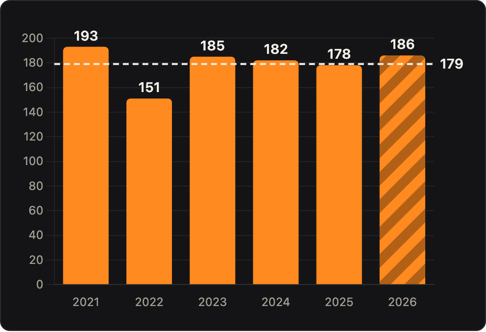
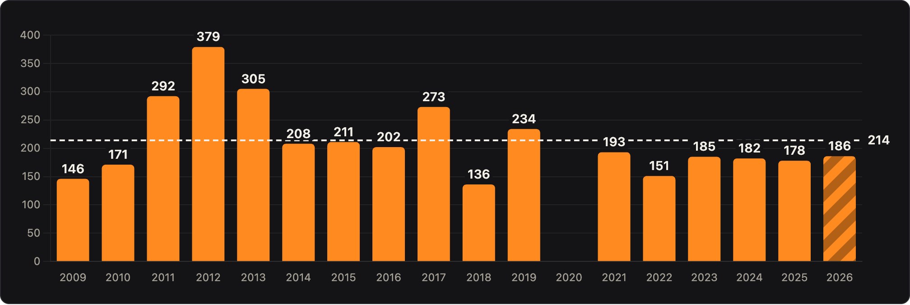
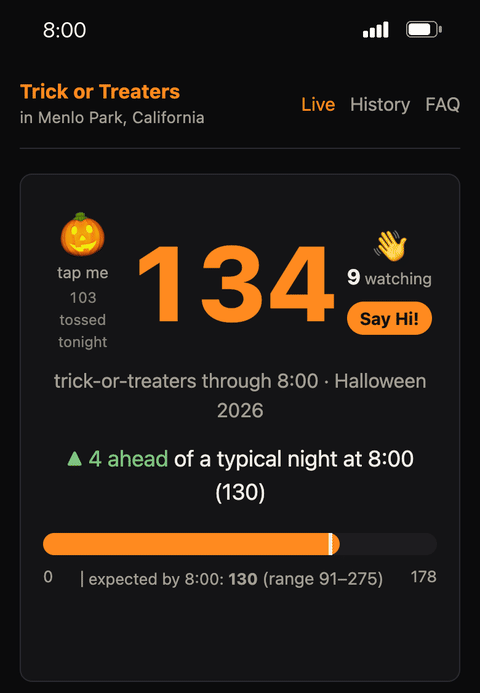
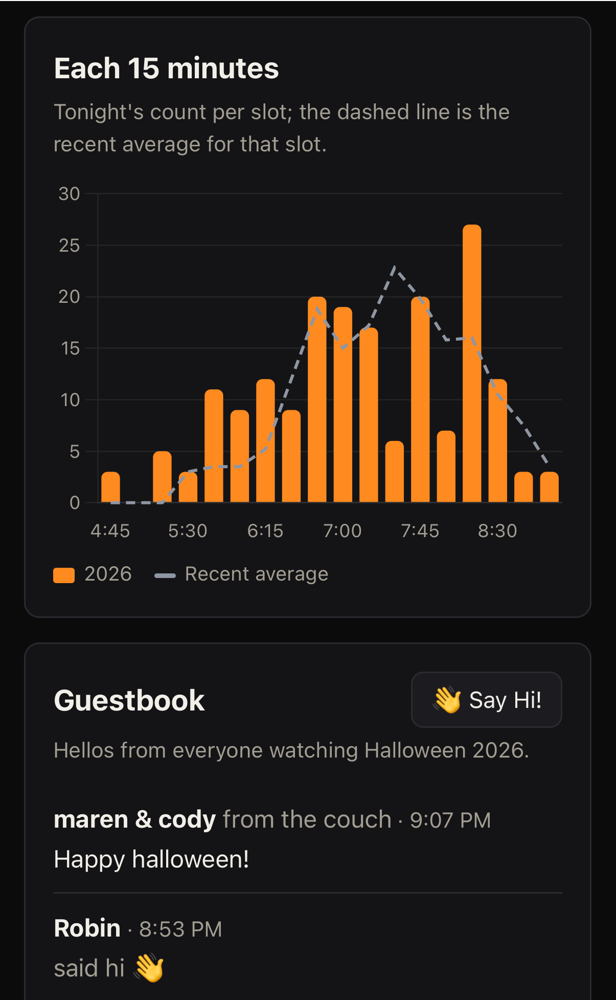

Spooky Consistency! 🎃🎃

Halloween 2026 is in the books now. We had 186 trick-or-treaters on Saturday night. A very respectable showing and a lovely evening.
What's surprising to me, year over year, is how consistent our count is, at least for the past six years. It's not like it's always the same families, or that our neighborhood is stuck. We're seeing a ton of new young families in The Willows, which makes it all the more surprising that it doesn't move the numbers much.
Well, at least since COVID. We did have some banner years, including about 2x our current amount in the nutty year of 2012. That year was nuts. This is the whole history so far.

New This Year: Live Tracking!
The big new thing this year was an app. You can try it out for yourself at halloween.kloninger.com. What you see if you go there now are some charts showing trends, but during the night-of, when we were doing the count, the live page was up showing the current tally. People have been asking me for that for years.
Here are a couple of screenshots of what it looked like on mobile. The guestbook and little "throwing pumpkins" interaction was fun.


There are a bunch of other charts up there too. I especially like the heat map, check that out.
I don't plan on maintaining the old Google Spreadsheet version anymore. It had a good run, but this is way more fun.